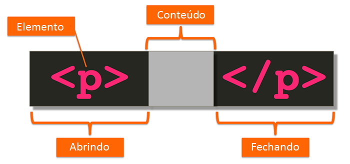

Em geral são estruturas de linguagem de marcação, e são responsáveis por criar elementos nas páginas Web com a função de organizar, identificar e limitar os conteúdos de uma página.O Browser fica com a resposabilidade de reconhecer esses elementos e renderiza-las apresentando seu conteúdo aos usuários.
São criadas através de uma tag de abertura e uma de fechamento feitas com um comando entre colchetes angulares "< >"
Como no exemplo abaixo:

O exemplo mostra uma tag de paragrafo, ou seja o navegador ao ler essa tag, saberá que todo o conteúdo inserido entre elas deve ser mostrada como um parágrafo, aplicando assim as formatações os comportamentos padrões apropriadas para este. Note que a tag de fechamento é criada com um “/” , isto indica ao navegador o fim do paragrafo e deste conteúdo.
Vamos conferir algumas das Tags: